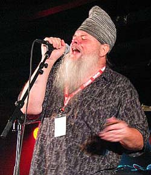
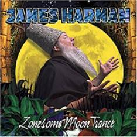
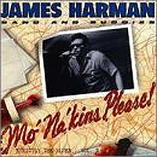

автор: Боб Марголин (Bob Margolin)

Если вы начинающий блюзовый музыкант, возможно, вам захочется распечатать или сохранить это интервью навсегда. Вы сможете возвращаться к нему, как к своей любимой песне, в течение всей жизни, когда вам потребуется вновь настроить свой компас. Опыт Джеймса Хармана и мудрость, которую он из него вынес, сделали это интервью самым поучительным из всех, что мне довелось проводить.
Если вы любитель блюза, вас впечатлит проницательность и цельность натуры Джеймса. Если вы признанный блюзовый музыкант, возможно интервью вдохновит вас на то, чтобы пересмотреть ваш привычный метод написания песен, составления и записи альбомов. Он рассказывает захватывающие истории и в своих песнях, и в общении. Он шумно потешается над некоторыми расхожими аспектами исполнения и записи музыки последних 40 лет, и вы, возможно, подумаете: «Черт, а мне нравятся эти песни, альбомы, эти музыканты:» Но вы поймете, что дело тут не в простой теории «Раньше все делали лучше». Если то, что он говорит в этом интервью, покажется вам крайностью или нетерпимостью, я посоветую вам послушать его записи или сходить на его концерт. Вы, тем не менее, можете не согласиться со всем, что он говорит, но великолепное качество блюза исполняемого Джеймсом, и теплый, полноценный, настоящий звук всех его пластинок, вызовет у вас, если не восхищение, то по крайне мере уважение - Джеймс высоко ставит планку.
Джеймс Харман номинировался на премию им. W.C. Handy в этом году с трех категориях, что указывает на некоторые из его сильных сторон: Блюзовая песня Года, Современный блюзовый музыкант и Инструменталист (Гармоника). Он заслужил эти почести и свою солидную репутацию своим оригинальным Блюзом. И добился он этого не прибегая к компромиссам и не следуя стандартным способам построения карьеры блюзового музыканта.
В прошлом августе я остановился в небольшой душной комнатке в подвальчике одного казино в Lake Tahoe. Было необычно тепло для этой местности, жара не давала спать. Я отыскал возможность подключиться к сети и покопаться в интернете, как неожиданно сообщение "непрочитанное письмо" принесло с собой кошмарную новость от Джеймса Хармана: его незаменимая коллекция раритетных инструментов, усилителей, пластинок, и оружия была похищена. Он, конечно же, был в полном отчаянии, но он сильный человек, он в состоянии оправиться от удара и продолжить свой привычный ритм жизни и творчества. Я никак не смог бы его утешить, разве только предложив свое сочувствие - ведь на его месте мог бы оказаться и я - но мне также пришло в голову, что Джеймс может сделать очень интересное и особенное интервью для BluesWax. Примерно с пол года спустя, Джеймс был готов ответить на мои вопросы, и выслал мне этот текст, предложив: "Я слишком устал, чтобы делать правку, просто сделай все так, чтобы было похоже на текст, написанный человеком в здравом уме". Если уж Джеймс не в своем уме, хотел бы и я быть таким же. Я естественно ничего написанного не изменил, только добавил пояснения в скобках, на случай когда какое-то имя не знакомо молодым любителям блюза.
Боб Марголин для журнала BluesWax: Ты хочешь что-нибудь сказать о краже?
Джеймс Харман: Самое отвратительное во всем этом то, готов поспорить, сейчас какой-нибудь 16-летний племянничек этих преступников играет на белом страте Мэджик Слима или на моем Гибсоне ES350 1946 года, с тремя звукоснимателями P-90's [прототип ES5, выпущенного год спустя], сидя в своей комнате. Держу пари, что он заплатил за него 200 долларов, и ни он, ни его дядя-вор понятия не имеют о ценности этих инструментов. Это был самый настоящий джек-пот для взломщиков... они в крупном выигрыше... А я вот здорово проиграл. Глупо было оставлять все эти ценные вещи там надолго. Если бы только у меня было бы время перевезти все немного раньше, я мог бы всем этим распорядиться, и в конце концов мог бы все распродать, чтобы обеспечить себе пенсию, которая для меня, как и для большинства блюзовых музыкантов не предвидится. Точка.
BW: Мне ли не понять! Давай перейдем к музыке. Когда ты решил записывать и исполнять только свои собственные песни?

ДХ: Как только это стало иметь для меня смысл. Тут важнее не то, когда это произошло, а то, кто этому помог ... КТО ... Б.Б.Кинг! К тому времени я уже 10 лет занимался музыкой, 4 раза переезжал с одного места на другое, в конце концов, обосновался в Калифорнии. Нам крупно повезло, и моей группе, Icehouse Blues Band, выпало открывать концерты Б.Б.Кинга во время концертного тура по 24 городам. В те времена его еще не окружали "блюзовые спецслужбы" с рациями. Каждый вечер перед концертом, мы просто сидели в гримерке и прослушивали "новые" кассеты из наших коллекций. Вы, конечно же, знаете, что он по-прежнему горячий поклонник чуть ли не каждого второго блюзмена. Звучала песня, и он рассказывал какую-нибудь историю об исполнителе или о том, как происходила запись. Мы обменивались подобными рассказами каждый день; тут у него было серьезное преимущество - ведь он знал, выступал, и тусовался почти с каждым блюзменом старой школы. Хоть я и не мог рассказать ему какую-нибудь интересную историю о Роберте Найтхоке, у нас сложились замечательные уважительные отношения. Мне повезло - я был в нужном месте в нужное время.
Первый концерт проходил в Royce Hall в Лос-Анджелесе. Помню как я познакомился с Роном Леви (Ron Levy), который в то время играл у Би на пианино. Мы немного поболтали тогда с Роном: Уже 33 года прошло, а мы все еще дружим. БиБи приходил пораньше, и мы устраивали импровизированные посиделки, слушали музыку и болтали. Он слушал все мои выступления, следил за всем, что я пел, говорил и делал. После шестой или седьмой предконцертной посиделки Би подошел ко мне, выключил магнитофон и сказал слова, которые изменили всю мою жизнь... он сказал: "Я слушал, как ты работаешь... вот ты делаешь песню Хаулин Вулфа... песню Бобби Блэнда... а потом одну из своих. Потом ты делаешь Мадди, потом Сони Боя, потом одну свою. Потом Фредди Кинга, Литтл Уолтера, а потом опять одну из своих!" "И что?", спросил я. Он продолжал: "У тебя хорошие песни, приятный голос, и тексты твои со смыслом и клевые... твоя группа хорошо тебе аккомпанирует, почему бы тебе не начать быть Джеймсом Харманом вместо того чтобы быть блюзовым музыкальным автоматом? Что означает это ваше Icehouse Blues Band?" Уверен, вид у меня был, как если бы меня огрели по голове палкой! Я только сидел на него уставившись, а он продолжал: "если бы я все время делал песни Букки [Бука Уайт], Ти Бона [Ти Бон Уокер, не путать с Ти Боном Эриксоном], Тампы Реда и Луи Джордана ... когда бы я стал БиБи Кингом ? "Ты должен рассказать всем свою собственную историю, и дать всем понять, что это твоя история!"
Знаешь, у меня не было вразумительного ответа на это заявление. Он продолжал, говорил, что песни, выпущенные тобой - это все что у тебя есть, ведь нот всего только 12, а музыку писали еще задолго до того, как мы к ней подобрались. Он говорил, что только хорошие истории будут жить долго, и если сможешь сделать их своими собственными, петь их так, чтобы они трогали людей, вот тогда кое-чего добьешься. Он сказал: "Это все, что ты на самом деле оставишь своим детям". Я, конечно же, глупо протрубил со всей энергией 26-летнего молодца: "Би, но у меня же нет детей!" А он мягко ответил "Ну так будут" с этой Би Би Кинговской улыбкой, ну ты знаешь, о чем я, Боб.
В тот вечер я вернулся в мотель, сел на кровать и заплакал как ребенок. Я столько над этим думал, что у меня разболелась голова. Я никогда не забуду, как он объяснял, что "артист" - это человек с узнаваемым голосом. Ну конечно, хорошо, когда есть интересная аранжировка, умный текст, но когда голос звучит по радио ... БАХ! Все скажут "Это БиБи Кинг!" Они должны узнавать тебя, и верить в то, что ты поешь о том, что действительно любишь, от всего сердца! Это можно сравнить с чтением хорошей книги: она тебе интересна лишь когда тебе не безразличны персонажи. С того самого вечера я стал исполнять почти только свои песни. Мне очень везло, ведь у меня всегда были контракты на выпуск пластинок. Я все время в процессе написания песен, а записывать берусь, когда все песни завершены и я чувствую, что они готовы к записи. Начиная с того дня, я постоянно много работаю, пытаюсь изобретать идеи для новых песен, оставаясь в рамках блюза, будучи блюзовым музыкантом, но вместе с тем всегда в поиске интересного нового взгляда. 17 моих песен использовались в кинофильмах, еще несколько в телевизионных шоу... Я довольно много сделал, так что я благодарен судьбе и по-настоящему счастлив.
Учиться на примере людей, которые сделали кое-что до тебя. Старики в моем городе говорили мне это, но до меня не доходило. Я очень долго работал, пока меня не стали называть "парнишка, который поет как мужик" почти во всех местных черных клубах в Панама Сити во Флориде. Старики всегда говорили мне "Делай свои вещи, парень... будь блюзменом, рассказывай историю так, как сам хочешь!" К шестнадцати годам я уже выступал за деньги. В течение двух лет, когда все мне говорили, что я чего-то добьюсь в музыкальном деле, я поучил от людей, занимавшихся поиском талантов предложение поехать в Атланту и записать пластинку. До конца того десятилетия я гастролировал на востоке Штатов, выпуская синглы на южных лейблах с минимумом раскрутки, или вообще без нее. В поисках места для жизни и работы я отправился в Чикаго, затем в Нью-Йорк, но так и не смог привыкнуть к холоду, ведь в моих жилах жидкая кровь человека с теплого побережья. Хотя я все время писал свои песни, я исполнял много малоизвестных песен раннего блюза своих любимых музыкантов. Я вернулся на юг, безуспешно пробовал на Маями и в Новом Орлеане, а затем, после 12-летнего периода гастролей и записей, когда ни радио, ни пресса, ни промоутеры мне не помогали, я перебрался в Калифорнию. Все изменилось, как только я сюда попал. Существовал рынок блюзовой музыки, где 4 основными заведениями были Ash Grove, Golden Bear, Troubadour, и Light House. Все они представляли джаз и в некоторой степени блюз, - намного лучше, чем вообще без блюза. Я стал любимым исполнителем и группой поддержки для многих своих блюзовых героев, которые живы-здоровы и по-прежнему выступают. Я добился этого, не исполняя поп песен или каверов, от чего я еще более горд.
Боб Марголин для журнала BluesWax: Множество замечательных блюзменов исполняют хорошие песни, написанные другими, некоторые занимаются только интерпретациями. Похоже, "оригинальность" является твоей целью - ты можешь что-нибудь к этому добавить?
Джеймс Харман: Все учатся на примере того, как ту же самую работу делали до них; наверное это продолжение системы "мастер и подмастерье", существовавшей в Старом Свете. Некоторые певцы обладают совершенно удивительными голосами. Это не гарантирует ни того, что они когда-нибудь приобретут навыки, необходимые для написания песен, ни того, что в их сердцах родятся свои собственные истории.
Ну, нет такого правила, что певцы непременно должны писать песни, или наоборот, существует масса композиторов, которые не запоют даже под дулом пистолета! Самая большая проблема, это когда сидишь среди зрителей и должен слушать некоторых, которые думают, что наделены всеми талантами... ОЙ!!! Я не знаю что хуже: плохая песня, спетая плохо или хорошая песня, испорченная плохим исполнением?! Ну, как бы там не было: лишь немногим уготована судьба Тампы Реда или Биг Билла [Брунзи]; некоторые будут петь за выпивку в забегаловке на углу, что тоже клево. Хорошие песни, как и хорошие истории будут пересказывать, перечитывать и переписывать всегда! А мне вот всего лишь хочется узнать, кто научил Чарли Паттона этой штуке [хриплому пению, которое повлияло на молодого Хаулина Вулфа]?!
BW: Твои альбомы звучат как классический Ритм-энд-блюз и Блюз старой школы - ни каких уступок современному стилю. Ты делаешь это намеренно?
ДХ: Знаешь Боб, я просто хочу, чтобы из динамиков доносился тот звук, который я слышу в голове, никаких других правил у меня нет. Получилось так, что моим звукорежиссером, сопродюсером и партнером стал Джерри Холл, молодой белый паренек из Мотаун в Детройте. Обучение по месту работы, он получил, выполняя работу для знаменитостей, и этого опыта хватило бы на четверых. Он перебрался в Калифорнию, еще будучи инженером звукозаписи у Холланда, Дозье и Холланда (Holland, Dozier & Holland, знаменитые продюсеры и композиторы студии Мотаун]. Когда нужно сделать так, чтобы песня звучала по-настоящему... Джерри знает что делать. У него еще есть очень тонкое умение найти то, что должно быть услышано и прочувствовано в песне. Когда я делаю песни, он тоже слушает, и ко времени когда завершается работа над одной их них, песня по-настоящему обретает жизнь.
Ну а я... Я всю свою жизнь серьезно коллекционировал записи, изучал музыку, начал петь за деньги еще в 62-ом выиграл конкурс местных дарований, в результате чего поехал в 64-ом в Атланту, чтобы записываться. Следующие пять лет я гастролировал на востоке Штатов, выступал сольно и аккомпанировал наверное каждому из ныне здравствующих блюзовых музыкантов, выступал на разогреве для тех у кого были свои группы. У меня вышло семь сорокапяток с синглами в 60-х, еще до того как я записал свой первый альбом. Я провел больше времени на студиях звукозаписи, чем кто-либо кого я знаю, за исключением Джерри Холла.
Мы оба переехали в Калифорнию в одно время, мы познакомились во время моей записи в Голливуде в 72-ом. Последние 43 года моей жизни прошли в записях и выступлениях; последние 33 года - я музыкант, композитор и продюсер и, по-прежнему, увлеченный блюзовый фанат. За 33 года совместной работы, мы с Джерри выработали свою собственную систему записи альбомов Джеймса Хармана, и она нас устраивает. Мы не думаем о старой школе или о старом звуке, нам просто по-прежнему нравится то, что нравится, и мы пытаемся творить, скорее оставаясь в рамках формы, чем выходя за ее пределы. Эта задача доставляет мне большее удовольствие, чем попытка скрещения со стилем мне не близким.
Мы на самом деле не уделяем большого внимания старому или новому звуку, как концепции. Обычно мы называем звук либо настоящим, либо фальшивым. Я знаю, что это и дар и мука одновременно, но мы можем прослушивая записи определять, что использовалось, а что не использовалось в процессе. В общем, мы слышим, клеевая запись или нет, основываясь на том, цепляет или не цепляет. Предполагаю, мы оба просто перестаем воспринимать музыку, если случается услышать что-то звучащее на наш вкус фальшиво. А это неизбежно происходит, когда работаешь в студии, заполненной микрофонами 40-х и 50-х годов, с ламповыми предусилителями и записываешь все в открытом виде. Мы называем то, что мы делаем не старым звуком, а настоящим звуком.
Мы часто слышим много "новой" музыки, которая звучит так, как если бы музыкант не знал ничего о процессе записи и полностью положился на "парня из студии". Конечно же, парень из студии и понятия не имеет о блюзовых записях, так что интереснее всего ему воспользоваться своими самыми современными дорогими примочками. Большинство сегодняшних музыкантов намного больше увлечены самими собой, чем песнями и тем, как они звучат. Это звучит как широкое обобщение, я знаю, но черт возьми... я не терплю всех этих 5-ти - 6-ти струнных бас гитар. Это не Блюз! Я ненавижу все эти заглушенные плоско звучащие диско бас-томы с отверстиями вырезанными, чтобы можно было подзвучивать ударный пластик, вместо того чтобы подзвучивать воздух вокруг барабана. Я просто ненавижу басовые барабаны с дырками [ в переднем резонаторном пластике басового барабана], я не люблю барабаны, которые звучат как шлепок! Я этого не переношу. У барабана должно быть два пластика, и надо еще знать, как правильно их настраивать. Подзвучивать надо на расстоянии нескольких футов, чтобы слышать звук барабана вместе со звуком помещения, с воздухом, а не прямо в ухо - это же не естественно. Когда входишь в комнату, где играют музыку, твои уши не прикладываются к каждому барабану и динамику, они слышат все в этой комнате в естественном балансе... сквозь воздух. Я не изобрел этого, я просто указываю вам на это. Если вы не согласны - мне жаль, подайте на меня в суд или не соглашайтесь, но блюзовые записи так не звучат. Думаю, для того чтобы записывать блюз правильно, вы обязаны понять, как звучит блюз... как он должен звучать.
Меня не трогают блюзовые записи середины 60-х, которые многие так любят. Помню, как я услышал новую пластинку Джуниора Уэллса и подумал, "А звучит- то вовсе не круто, звук сухой и жесткий, басист и барабанщик сидят на рок-музыке". Позднее все схватились за методы записи 70-х, всем захотелось делать хиты... потом началось копирование альбомов Иглз и Стива Миллера. Тут то для меня все закончилось. Лично у меня нет времени слушать, как кто-то играет фразы Альберта Кинга со звуком Джимми Хендрикса с чрезмерной громкостью, для меня это не блюз. После этого я перестал покупать новые пластинки и сконцентрировался на поиске старых. К началу 70-х последняя капля переполнила чашу моего терпения. С барабанов стали снимали пластики, микрофоны устанавливать вплотную к барабанам и динамикам, и никто не знал, как играть и записывать правильно. Когда я слышу игру слэпом на электрическом басу - я просто ухожу, когда это дело начинают защищать, говоря то это современно, я говорю: "Ах, вы имеете в виду так же СОВРЕМЕННО, как в 70-е? Это не современно, это вовсе не круто. Это уже не хорошая запись хорошей песни в исполнении хороших музыкантов, а фишка продюсера хитов. Не поющие басисты, которые не знают текстов песен, или которым и вовсе наплевать, о чем эти песни, ищут, чем бы себя занять, поэтому покупают все эти страшные пяти-шести-струнные бас-гитары сделанные из 27 экзотических пород дерева, с активной электроникой и т.д. Что общего это все имеет с человеком, поющим блюзовую песню под аккомпанемент группы? Ничего, это утеха для скучающего, не музыкального бас гитариста, который берется выступать, несмотря на то, что блюз ему на самом деле даже и не нравится... Я знаком с сотнями таких.
Это продюсерские фишки, не имеющие отношения к музыке. Если ты каждую минуту думаешь о том, как бы так записать, чтобы звучало как новомодный хит, ты игнорируешь, что музыка требует естественного звучания. Когда я обсуждаю с кем-нибудь увечную, перегруженную нотами манеру игры на слишком многострунном басу, я не пользуюсь термином "современная": черт, сейчас же 2005, а не 1970 год. Неужели эта паршивая, страдающая тягой к звездной славе, не свинговая басовая манера звучит для вас современно? И сейчас? "Новые идеи?" 70-е - это по-прежнему современно?
Мы не записываем звук с микрофонов, прижатых к источнику звука вплотную. Понимаешь, они это делают, чтобы все задавить, заглушить барабаны, чтобы они не звучали звонко, приставить микрофон как можно ближе, и снимать только самый основной звук, а потом придать ему фальшивый объем примочками и эффектами... все дело в людях сидящих на студии, в их желании контролировать все, и не принимать в расчет пожелания музыкантов. Со мной это не пройдет. Я все время буду противостоять этой концепции. Большинство блюзовых музыкантов интересуется музыкой, а не этими штуками. Человек на студии говорит: "Мы всегда так делаем", и наш бедный музыкант вынужден подчиниться. Нельзя сделать запись, которая звучит как блюз с помощью новейших конденсаторных микрофонов и транзисторных приборов, которые делают звук на выходе безжизненным! Меня лучше не заводить. Люди говорят, что мне нравится только музыка 40-х - 50-х. Во многих своих песнях я пользовался звуком начала 60-х; послушайте песню "Where's My Thang" с моего альбома Cards on the Table, записанного в 1994. Скажите мне, что эта песня не звучит как в 60-е. Я только хочу, чтобы звук был настоящим.
BW: Кажется, ты рассматриваешь историю выпуска своих альбомов в целом, а не по отдельности, в отличие от большинства музыкантов.
ДХ: Любопытно почему эти музыканты хотят так ограниченно смотреть на историю своей деятельности? Это как игра в бильярд. Если не знаешь как подставить себе шар, чтобы подготовить следующий удар и не оставить шансов противнику: ты просто играешь для забавы, а не для выигрыша. Я не делаю альбомов, я записываю песни. Я бы не стал прибегать к записи каверов, чтобы заполнить альбом. Я продумываю весь проект полностью до того, как приступаю к записи. Я почти все время пишу песни, а записываю я, только когда они готовы к записи. Я записываю песни небольшими порциями, в соответствии с тем, кто у меня играет. А потом микширую все вместе, чтобы получился альбом. Я никогда не записываю разом все песни для одного альбома. Я перестал использовать только один бэнд для записи целого альбома много лет назад. Мне нравится, как работают разные музыканты, и естественно я выбираю тех, кто на мой взгляд подходит для каждой песни. Когда у меня возникает замысел, я почти сразу уже слышу, кто должен играть, это звучит в моей голове задолго до начала записи.
Я начинаю работу над записью каждой партии песен с того, что нанимаю музыкантов, бронирую студию и комнаты в мотеле. Я устраиваю репетиции, если это необходимо и время позволяет. В начале записи, я целый день занимаюсь поиском звука. Сначала я приглашаю барабанщика, он настраивается и начинает играть, затем, если в песнях используется бас, он приходит следующим. Я люблю, чтобы гитаристы приходили попозже и вступали в игру, когда ритм-секция уж качает. В то время как они разогреваются, мы меняем положение микрофонов или инструментов до тех пор, пока звук в колонках не становится естественным... а потом я заказываю ужин. Процесс микширования начинается уже когда меняешь положение микрофонов, добиваясь правильного звука: К тому моменту устанавливается уровень звучания всех инструментов. Все что остается сделать - это добавить вокал, где нужно:все уже по большому счету смикшировано.
Я записываю только те песни, которые готовы для записи. Записываю я до тех пор, пока результат меня не удовлетворит. Либо я записываю их так, как я хочу, либо я не использую их вовсе. Поскольку я пишу примерно 30-50 песен в год, у меня в голове всегда много готовых песен. Я записываю каждую как сингл, а не как просто один трек из альбома. Я выбираю песен 12 или около того, которые на мой взгляд хорошо звучат вместе и приступаю к созданию идеи для оформления обложки. Мне никогда не хотелось работать по какой-нибудь другой схеме. Зачем соглашаться на выпуск альбома, если у тебя всего пять хороших песен готовых к записи? В таких случаях многие музыканты попадают впросак.
Я всегда рассматриваю свои альбомы как произведения искусства, а не просто как очередной альбом концертирующей группы. Многие музыканты, обязаны выпустить альбом для лейбла к определенному сроку, они под нажимом, не укладываются в бюджет и по времени: вот тут и попадаешь впросак! Мне тоже приходилось это испытать в 60-е и 70-е, но я был внимателен. Я знал, как самому все правильно сделать.
Знакомство с Джерри Холлом в 72-ом было для меня большим прорывом. Я знал как должны звучать мои песни, а он знал как помочь мне это реализовать. Он берет на себя студийную часть работы, так что я просто пою песни, мы - хорошая команда. Мы используем эту же схему, когда продюссируем других музыкантов. Я всегда говорю им: "Мы можем сделать так, чтобы ваш альбом хорошо звучал, но мы не можем заставить вас придумывать хорошие идеи или научить вас петь. У нас свои фирменные секреты по созданию реального звука: в этом то все дело.
Боб Марголин для журнала BluesWax: С тобой записывалось много замечательных музыкантов, некоторые из них известные, некоторые нет. Не хочешь рассказать нам о ком-то из них, почему ты хотел записываться с ними, может быть расскажешь нам какой-нибудь интересный случай?
Джеймс Харман: Когда у меня в голове рождается песня, я могу уже сразу сказать, кто мне нужен для исполнения определенных партий. Случай? Не думаю, что у нас на это много времени, но получается как в хорошей книге, разве нет?! Вот что я могу рассказать: Я хотел, чтобы мой приятель Элмо "Бадди" Рид (Elmo "Buddy" Reed) сыграл у меня на гитаре в своей соул манере, еще задолго до того как мне удалось притащить его на студию. Я даже сделал свою версию одной из его песен, что со мной происходит очень редко, но ее надо было записать, и ему нужно было сыграть, а мне просто спеть ее! Послушайте песню "Sweet Sweet Dream" с моего альбома Takin' Chances, записанного в 1998. Ты там тоже играешь, Боб... Черт, я не мог представить, чтобы кто-то другой из живущих на этом свете сыграл так на гитаре, в миноре, в песне которую я назвал "Gamblin' Blues"! А лучшей связки чем ты и Робби Изон (Robby Eason) в песне "Five'll Getcha Ten" и не придумать. Помнишь, как вы сидели во дворе и продумывали свои партии, а потом мы все записали с первого дубля? Я обожаю участвовать в создании такой музыки. Все что я делаю - просто пытаюсь добиться, чтобы из динамиков слышалось то, что слышится мне:а это не просто, иначе все бы так могли!
BW: Ты выступаешь достаточно давно, помнишь "старые времена" и некоторых из легендарных музыкантов, которых уже нет с нами... какие-нибудь особенные воспоминания на эту тему?

ДХ: Их слишком много, чтобы уместить в этой статье, ну да ладно... вот одно из них. Биг Джо Тернер (Big Joe Turner) всегда был моим хорошим другом, человеком который меня вдохновлял. Он до самого конца своих дней сохранял свое замечательное чувство юмора. Он мог сидеть и травить байки всю ночь, он знал всех и каждого. Однажды на одном очень крутом мероприятии в Лос-Анджелесе, тогдашний мэр Том Брэдли вручал Джо почетную награду за его достижения в течение 50 лет в шоу-бизнесе. Джо, конечно же попивал в свое удовольствие, не особенно обращая внимание на человека в черном костюме, произносящего какую-то речь. Мэр все говорил и говорил о своем любимом музыканте, который столько удовольствия и радости доставил зрителям, представлял всех чернокожих музыкантов и т.д. и т.п... Глаза Джо становились все больше, потом еще больше! Неожиданно Джо оторвал взгляд от своего бокала и стал показывать на человека, произносящего речь. Он улыбнулся своей фирменной улыбкой "Биг Джо", приблизился к мэру и произнес голосом, которому не нужен микрофон: "Том... Старина Том Брэдли! Дорогуууууша... как поживаешь? А помнишь, как мы с тобой закатились в кабачок Hattie Mae's в 47-ом... ну и оттянулись же мы там! Нас потом оттуда вытаскивали... ну ты помнишь, Том?"
В этот момент мэр произнес что-то типа "э-э-э: гм-гм... м-м-м" и начал говорить громче, пытаясь заставить Джо заткнуться. Мы все чуть не обмочились со смеху. Джо позже рассказал нам как они таскались по всяким веселеньким местам вместе уважаемым мистером Брэдли, который, по-видимому, в те времена тусовался с музыкантами. Джо был так неподдельно счастлив встрече со старым приятелем по ночным приключениям, мэр же хотел немедленно прекратить всякие россказни! Это просто как случай как из книги.
Случай с БиБи Кингом я уже рассказывал [см. Часть Первую], он был для меня важной моментом. Сидеть в одной машине, выпивать и музицировать с Уолтером Хортоном (Walter Horton)[покойный Биг Уолтер "Шейки" Хортон, харпер из Чикаго, обладавший несравненным звукоизвлечением] - было все равно что побывать на другой планете... Я никогда этого не забуду. В какой то момент он сыграл одну фразу и передал гармонику мне... я сыграл, как мне показалось, точь-в-точь ту же фразу. Биг Уолтер как двинет мне по ноге! По ноге и притом больно... а потом говорит: "Черт подери... я же тебе еще не сказал съезжать вниз, мудак ты чертов! Играй наверху", проворчал он, указывая на крышу машины!" Я этого никогда не забуду.
Джордж Смит (George Smith) [бывший харпер Мадди который был примером для подражания харперов с западного побережья, его часто описывал Дуг Маклеод (Doug MacLeod) в журнале Blues Revue] - замечательный парень, с ним здорово тусоваться, у него нестандартная психология. Он всегда умудрялся заставить тебя задуматься, правда не всегда было понятно о чем и для чего. Я был знаком и играл с Джорджем какое то время, однажды я зашел к нему на выступление. Он не поприветствовал меня кивком, как обычно, когда я с улыбкой проходил мимо сцены. Вместо этого он обратился к зрителям: "Леди и джентльмены... сегодня у нас здесь прекрасный музыкант, сам я с ним не знаком, но говорят, никто так здорово не поет и не играет на гармонике, как он" Я оглянулся, чтобы понять, кто этот загадочный парень. Джордж продолжал: "Мне сказали , что его зовут Джеймс, 'Крутой Харпер' Джеймс' ... вас так зовут, сэр?" Наконец я понял, что он обращался ко мне! Я был ошарашен - ведь мы уже давно были друзьями и не раз выступали на одной сцене. Я принял роль и спросил, указывая на себя: "Кто, я?" "Да, сказал он, вы, сэр... не угодно ли вам подняться и спеть одну песню для замечательных людей, которые здесь сегодня с нами?"
"Ну конечно, я спою". Я присоединился к спектаклю. Я уже не раз там бывал, и многие знали что я и Джордж были приятелями. Я взобрался на сцену, а Джордж вышел в уборную. Мы сыграли 4 песни, до того как он вернулся с криком: "Аплодисменты, аплодисменты молодому блюзмену!" Позже за завтраком, я спросил Джорджа, к чему был весь этот спектакль "мы друг друга не знаем". Он посмотрел мне прямо в глаза и сказал: "Джеймс, иногда надо заставить их призадуматься". Я так ничего и не понял, но таков был Джордж.
Однажды я видел, как он выходил на сцену, большая толпа зрителей в нетерпеливом ожидании. Он несколько раз прошел взад и вперед по сцене со смятым коричневым пакетом из бакалеи Boy's Market в одной руке. Наконец, когда вся группа была на месте, все подключились и были готовы играть, он вышел на середину сцены, посмотрел вниз и высыпал все свои старые паршивые на вид гармоники из пакета прямо на грязную сцену! Он стоял на сцене во весь свой ростl 6'4" и пинал гармоники носком ботинка минут пять или десять. Когда толпа потеряла терпение, он наконец наклонился и поднял одну из них. Он поднес ее к губам так, как если бы никогда в жизни не играл, и издал жалкую слабую и фальшивую ноту. Гармоника зазвучала "фа-фа-фа, ту-ту-ту", как будто играл ребенок, который в первый раз взял ее в руки. Затем он неожиданно выгнулся и заиграл так мощно, так что у толпы снесло шляпы, и наверно краска посыпалась с машин на стоянке! БАБАХ! Он на всех парах бесподобно сыграл несколько песен Литтл Уолтера (Little Walter)! А позже уже вел себя как обычно. Потом, я снова спросил его, что это было за кривляние, он улыбнулся и ответил: "Я просто заставляю из призадуматься." Ну Боб, тебе тоже вовек не догадаться о чем.
BW: На твоих глазах Блюзовый Мир изменился и пришел к нынешнему состоянию, когда блюзовые клубы уже не составляют самую значительную его часть - сейчас проводится больше концертов и фестивалей. Как это изменило твою концертную жизнь?
ДХ: Это изменило всю мою жизнь. Я прекратил гастроли после ужасного гастрольного сезона 2000 года. Я сказал всем вовлеченным агентам, оставить попытки составить турне из совершенно разрозненных дат. Я решил принимать только те предложения, где в условиях оговаривался мой перелет к месту проведения фестиваля и обратно. Я по- прежнему каждый год выступаю на некоторых фестивалях в Штатах, но большей частью я делаю 3 или 4 тура по Европе. В этом году у меня запланированы Европейские концерты весной, летом и осенью. Всю зиму я занимаюсь только студийными проектами. После всех этих лет, странно не иметь своей собственной группы, но мне кажется, в будущем возможен только такой вариант. У меня есть замечательные группы в нескольких странах, я просто вылетаю на место и мы колесим, выступая на фестивалях и по клубам, когда есть время. А еще очень странно не иметь своих усилителей после долгих лет отбора и возни с ними. Сейчас я прошу предоставить мне новый Fender Bassman [переиздание]. В свое время у меня было 13 настоящих, и ни один из них я терпеть не мог... - просто не мое. Но я научился добиваться вполне хорошего звука на них, так что я указываю их в своем райдере, и делаю что могу. Еще одна странная ситуация - теперь я не могу перевозить свои диски и проч. товары для продажи. Это значительно урезало мои доходы. Я и представить себе никогда не мог, что дело закончится этим. Но вот вышло так, все равно это лучше, чем каждое утро рано вставать и делать то, что мне не нравится для кого то там. Я никогда этого не делал, надеюсь и в дальнейшем не буду.
BW: Каковы твои концертные и студийные планы?
ДХ: Я играю несколько небольших акустических концертов в дуэте и в трио здесь, в Калифорнии, пару раз в месяц. В прошлом году я отыграл всего 4 концерта в Калифорнии в полоном составе. С Кимом [Уилсоном] и Родом [Пьяццой] мы сделали большое харп-шоу в House of Blues, было весело... в финале мы все трое по очереди играли и пели; все как в старые времена. Когда я впервые попал сюда в 70-е, Род играл в Bacon Fat [легендарный калифорнийский блюз бэнд - помню, как слушал их в 1971 в Бостоне - Боб], Ким тогда был "Goleta Slim," а у меня была группа the Icehouse Blues Band ... мы были единственными блюзовыми группами и мы аккомпанировали всем, и постоянно играли по всему побережью.
В прошлом году я выступал на фестивале Central Valley Blues; было здорово! А сейчас у меня очень мало работы здесь. Ничего не происходит. Весной я буду вылетать почти каждые выходные для участия в одном или двух фестивалях, может в каком крутом клубе, при поддержке местной группы или местного блюзового сообщества. Я также иногда даю мастер-классы. В прошлом году весело получилось в Копенгагене, все билеты были проданы, а потом все зрители заплатили еще раз, чтобы остаться и послушать концерт! Обожаю Данию, люди там очень милые. Изменения большие - речь уже идет не о 250 концертах в год в 18 странах. В этом году к списку добавится еще 3 страны, но концертных дат будет всего 45 или 50.
С записью все по-прежнему - пишу музыку, записываю, выпускаю песни в клевых альбомах и это делает меня счастливым! Еще я делаю специальный проект. Все хотят знать, когда я снова выпущу тот или другой. Сейчас я на половину закончил один из них; он будет называться Strictly Live in '85...PLUS, и он представляет собой одноименный альбом, с тремя добавленными песнями, что позволит довести его до длительности компакт диска. Мастеринг в то время делался для винилового LP, поэтому больше 22 минут на одной стороне быть не могло. У записи по-прежнему хороший низ. Я умудрился прокрутить одну ленту 20-летней давности на 16-канальнике и оцифровать. Это значит не только что переиздание будет на 3 песни длиннее, но и что попозже выйдет Volume II! Я издам все это прежде чем выпускать новые альбомы.
Боб, обращаясь к Вам: Я слышал о Джеймсе Хармане еще в 70-е, но познакомился с ним только когда он сам представился мне в одной студии в Остине в 90-м. Я записывал тогда альбом Chicago Blues для Powerhouse Records (больше не выпускается) с такими музыкантами как Ким Уилсон, Джимми Роджерс и Уилли "Big Eyes" Смит. Если бы, если бы, если бы я только знал достаточно о Джеймсе тогда, чтобы попросить у него совета. Он не намного старше меня, но сейчас я гляжу на него как на старшего брата и друга. И я горжусь, что мог объяснить вам почему при помощи этого интервью.
интервью Боба Марголина,
специально для журнала BluesWax
перевод Арсена Шомахова